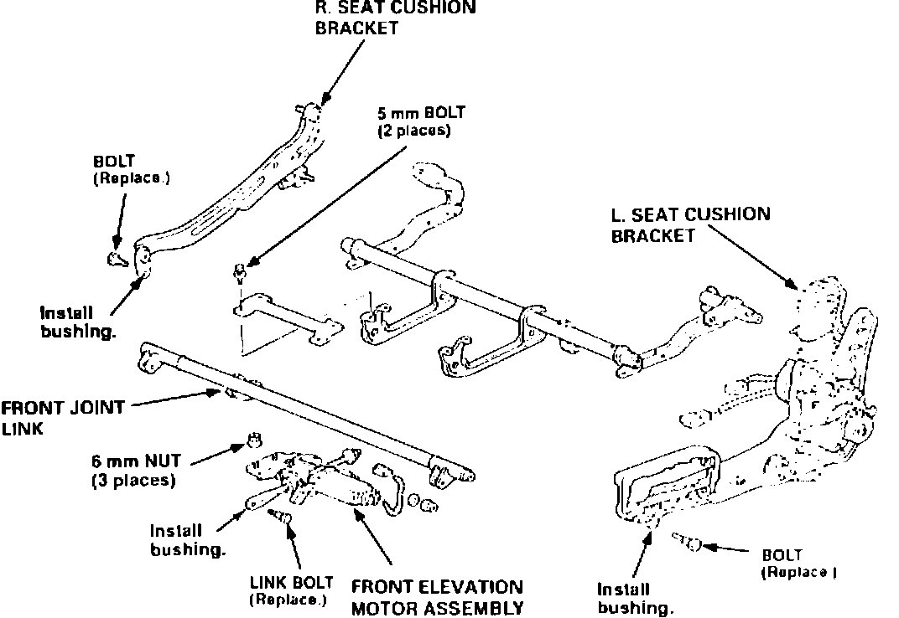
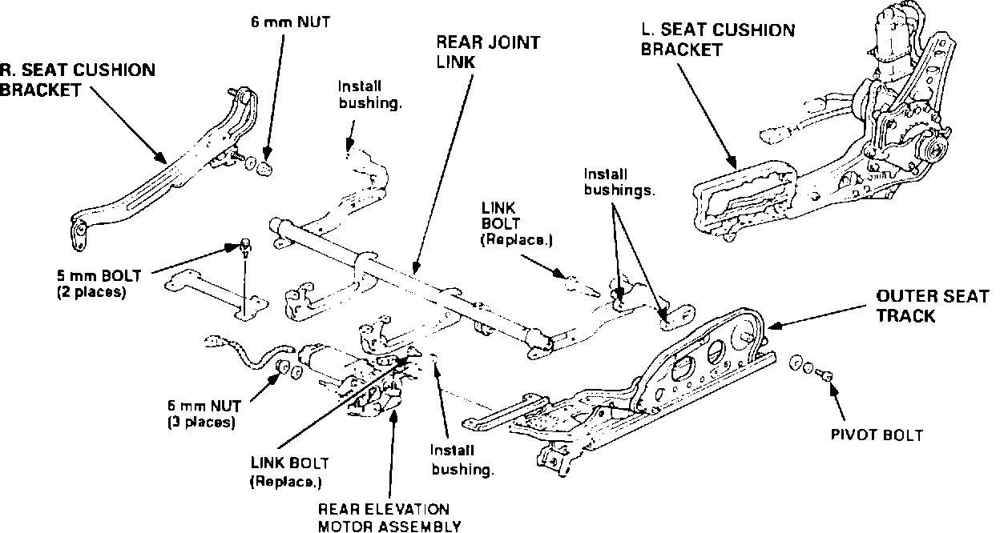

Driver Seat - Rocks Slightly on its Mounts
BULLETIN NO.92-017
YEAR
1991-92
MODEL
LEGEND
VIN APPLICATION
ALL
January 19, 1993
Driver's Seat Rocks (Supersedes 92-017, dated November 17, 1992)
SYMPTOM
The driver's seat feels like it is rocking slightly on its mounts.
PROBABLE CAUSE
The drive mechanisms in the front and rear elevation motors, and the bushings in the associated linkages, have too much clearance.
CORRECTIVE ACTION
Replace the elevation motor assemblies and the linkage bushings with the new parts listed under PARTS INFORMATION. Refer to Section 20 of the appropriate service manual.
1. Remove the headrest.
2. Move the seat forward. Remove the rear seat track covers and mounting bolts.
3. Move the seat backward and upward as far as it will go. Remove the front seat track covers and mounting bolts.
4. Coupe Only - Remove the plastic cap and the lower anchor bolt from the seat belt presenter.
5. Lift the front of the seat and support it with a 10 in. long piece of wood.
6. Disconnect all electrical connectors and remove the seat from the car.
7. Remove the front, recline, and height covers.

8. Disconnect the four motor power and pulser connectors. Remove the front elevation motor power connector from the bracket on the rear elevation motor. Remove the rear elevation motor pulser connector from the bracket on the front elevation motor.
9. Remove the bolt linking the front elevation motor assembly to the front joint link. Discard the bolt. Remove the two 5 mm crossbrace bolts.
10. Remove the three 6 mm front elevation motor assembly mounting nuts. Remove the motor assembly.

NEW
11. Install a bushing from the kit in the linkage arm of the new front elevation motor. Install the bushing so the split is facing the floor of the car. Flare the bushing end with a smooth, rounded object.
12. Install the new motor assembly. Tighten the three mounting nuts to 10 N-m (1.0 kg-m, 7 lb.ft.).
13. Install a new link bolt from the bushing kit. Tighten to 10 N-m (1.0 kg-m, 7 lb.ft.).
14. Reinstall the 5 mm crossbrace bolts. Tighten to 5 N-m (0.5 kg-m, 3.6 lb.ft.).
15. Remove and discard the two bolts attaching the front joint link outer arms to the seat cushion brackets.
16. Install new bushings in these links. Insert the bushings so the split is facing the floor of the car, flare the bushing end with a smooth, rounded object.
17. Reattach the front joint link to the seat brackets with new bolts from the bushing kit. Tighten to 10 N-m (1.0 kg-m, 7 lb.ft.).
18. Center the seat on the tracks by applying 12 volts to the fore/aft slide motor connector. Use a 2-pin male connector with extension leads so you do not damage the motor connector.
19. Remove the bolt linking the rear elevation motor assembly to the rear joint link. Discard the bolt. Remove the two 5 mm crossbrace bolts.
20. Remove the three 6 mm rear elevation motor assembly mounting nuts. Remove the motor assembly.
NEW
21. Install a bushing in the linkage arm of the new rear elevation motor. Install the bushing so the split is facing the floor of the car. Flare the bushing end with a smooth, rounded object.
22. Install the new rear elevation motor assembly. Tighten the three mounting nuts to 10 N-m (1.0 kg-m, 7 lb.ft.).
23. Install the two 5 mm crossbrace bolts. Tighten to 5 N-m (0.5 kg-m, 3.6 lb.ft.).
24. Install a new link bolt from the bushing kit. Tighten to 10 N-m (1.0 kg-m, 7 lb.ft.).
25. Move the seat all the way back on the tracks by applying 12 volts to the fore/aft slide motor connector.
26. Disconnect the rear joint link outer pivot points from the seat cushion brackets.
^ Right side - remove the 6 mm nut and washer.
^ Left side - remove and discard the link bolt. Remove the joint pivot bolt (allen head).
27. Install three new bushings. Insert the bushings so the split is facing the floor of the car, flare the bushing ends with a smooth, rounded object.
28. Reinstall the joint pivot bolt. Install a new link bolt from the bushing kit. Reinstall the 6 mm washer and nut. Tighten all three to 10 N-m (1.0 kg-m, 7 lb.ft.).
29. Reconnect the motor power and pulser connectors and install the connectors on the motor assembly brackets.
30. Reinstall the front, recline, and height covers.
31. Place the seat in the car and reconnect the electrical connectors.
32. Coupe Only - Install the lower seat belt pivot to the seat belt presenter. Tighten the bolt to 32 N-m (3.2 kg-m, 23 lb.ft.). Install the plastic cap.
33. Install the four seat track mounting bolts and tighten them to 35 N-m (3.5 kg-m, 25 lb.ft.). Install the seat track covers.
34. Install the headrest.
35. Move the seat bottom and seat back through their full ranges to make sure they do not bind.
PARTS INFORMATION
Front elevation motor assembly: 81518-SP0-A21
Rear elevation motor assembly: 81519-SP0-A21
Bushing kit: 81510-SP0-305 (Kit includes 11 bushings and five bolts. Only seven bushings are required to do one seat.)
WARRANTY CLAIM INFORMATION
In warranty:
The normal warranty applies.
Out of warranty:
Any repair performed after warranty expiration may be eligible for goodwill consideration by the District Service Manager. You must request consideration, and get the DSM's decision. before starting work.
Operation number: 851168
Flat rate time: 1.7 hours
Failed P/N: 81518-SP0-A21
Defect code: 061
Contention code: B99